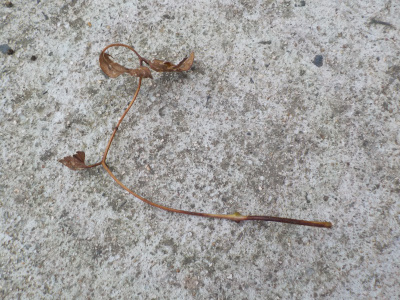
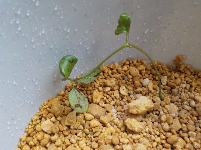
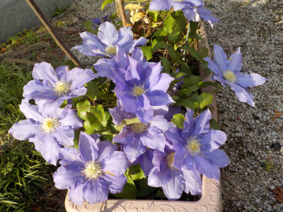
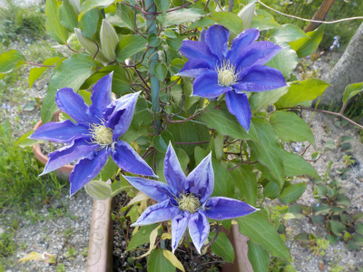
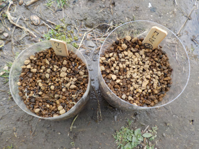
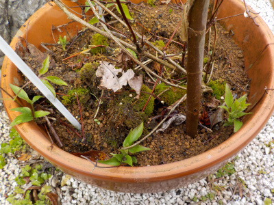
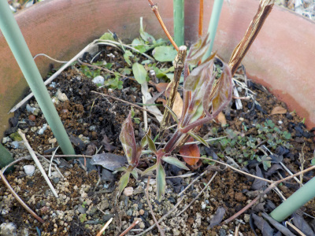
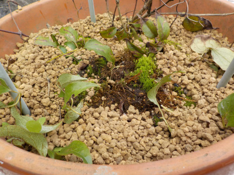
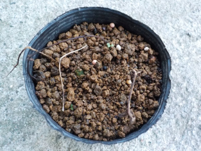
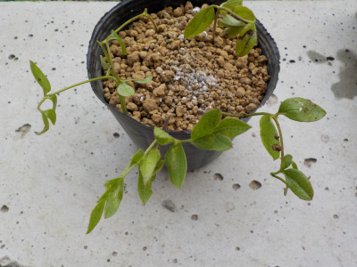

遊びで植物を育てよう
2021/07/18
クレマチスの挿し芽が枯れました。

いつものように枯れました。
クレマチスの園芸本を読んで勉強しようかな。
【クレマチスTOP】
【花TOP】
【園芸TOP】
2021/07/03
クレマチスの挿し芽をしました。

毎年失敗している篭口の挿し木を1本しました。
底面給水鉢を自作して、挿し木用の鉢が出来たので気軽に挿し木が出来るようになりました。
クレマチスは夏の暑さや、湿度に弱いそうです。今まで挿し芽に失敗していた理由がなんとなくわかりました。
秋になったらまた挿し芽をしようと思います。
【クレマチスTOP】
【花TOP】
【園芸TOP】
2021/05/02
クレマチスの花はもうすぐ散ってなくなりそう。

沢山咲いて綺麗だったんですが、ピークを超えました。
早いものは花びらを落としています。
今咲いているものも花色が薄くなっているので、あと数日で散りそう。
母の日には花がなさそうです。
【クレマチスTOP】
【花TOP】
【園芸TOP】
2021/04/24
クレマチスが咲きだしました。

咲いたばかりのクレマチスです。
まだ開ききっていないものもあります。
この株は蕾が沢山出来ているので賑やかになりそうです。
【クレマチスTOP】
【花TOP】
【園芸TOP】
2021/03/28
クレマチスの種蒔きをしました。

クレマチスの種って丸くて大きいのと、細くて小さいのがありますね。
丸いのは種が入ってて、細いのは種が出来なかったものなのかな？
調べればいいだけですけど、調べなくても種を蒔いてみれば結果で分かると思ったので分けて蒔きました。

どれくらいで芽が出るでしょうね。
【クレマチスTOP】
【花TOP】
【園芸TOP】
2021/03/14
クレマチスのツル伏せが成功したようです。

ツル伏せした鉢の外周らへんに、何カ所も芽が出ました。
沢山増えてうれしいです。
同じ鉢に株が沢山あってもしょうがないので、次は違う鉢かポットにツル伏せしようと思います。
これは普通のクレマチスで、篭口の方は芽が出ていません。
篭口も成功して欲しいな。
【クレマチスTOP】
【花TOP】
【園芸TOP】
2021/02/21
クレマチスの芽が2本出ました。

鉢の真ん中らへんから芽が2本出ました。春ですね。
この鉢は去年ツル伏せをしたので、成功していたら鉢の縁らへんから芽が出るんですけど、今のところ出ていません。
今後どうなるでしょうね？
去年はツル伏せした時期が遅かったと思うので、今年はこの2本のうち1本を早めにツル伏せしようと思っています。
【クレマチスTOP】
【花TOP】
【園芸TOP】
2020/09/27
今の時期にやっていいかわからないですが、クレマチスのツル伏せをしました。

冬で枯れる前に根っこが出るかな？
出たらうれしいです。
【クレマチスTOP】
【花TOP】
【園芸TOP】
2020/09/13
またまたクレマチスの挿し木に失敗しました。

クレマチスの篭口は連続失敗中です。
もうやめよう。
次は種蒔きに挑戦しようかな。
【クレマチスTOP】
【花TOP】
【園芸TOP】
2020/07/04
またクレマチスの挿し木に挑戦です。

近頃失敗ばかりのクレマチスです。
梅雨の時期は挿し木をした方がいいかなー。せっくかくの梅雨だし。
やらないよりはやった方がいいかなーと思いやりました。
今回は普通に挿し木です。
【クレマチスTOP】
【花TOP】
【園芸TOP】
2020/06/07
クレマチスの挿し木は失敗です。
2020/05/10
今年は母の日用ギフトでクレマチスを見なかったかも。
2020/04/25
クレマチスの挿し木をしました。
2019/11/02
スポンジ挿し木の途中経過
2019/10/27
クレマチスの種ができたかな？
2019/10/20
1週間前にクレマチスの水挿しをしました。
2019/09/23
クレマチスのペットボトル挿し木は失敗しました。
2019/08/08
クレマチスの篭口の種があまりできません。
2019/07/15
クレマチスが2回目の開花シーズンです。
2019/06/30
ペットボトルでクレマチスの挿し木。
【クレマチスTOP】
【花TOP】
【園芸TOP】
畑仕事じゃないよ。
【おいしいものを食べよう。】【たくさん寝よう。】
【ソロ活をしよう!】【季節感のあることをしよう。】【動画視聴はほどほどに。】【当サイトの全てのコンテンツは無断転載禁止です。】